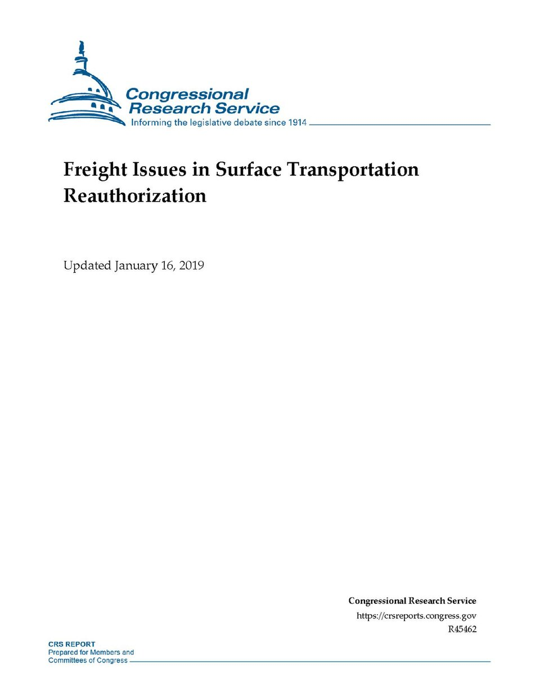
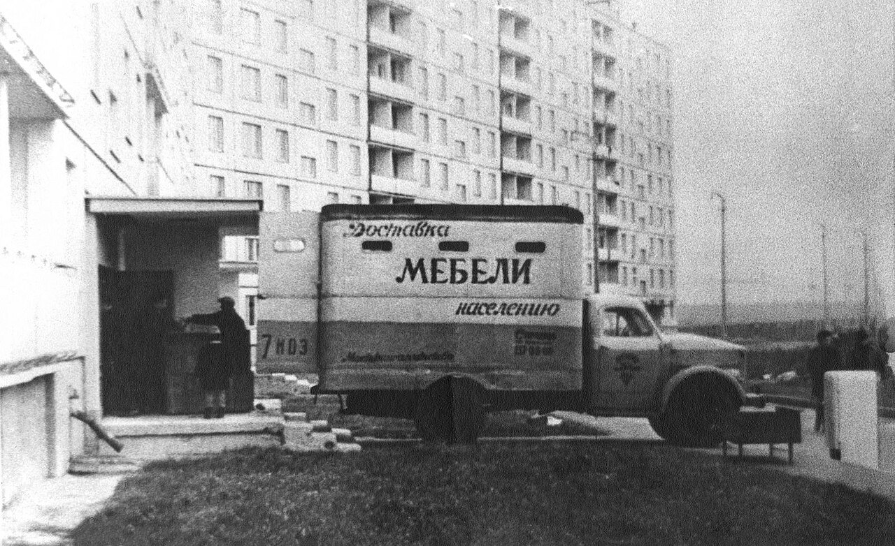
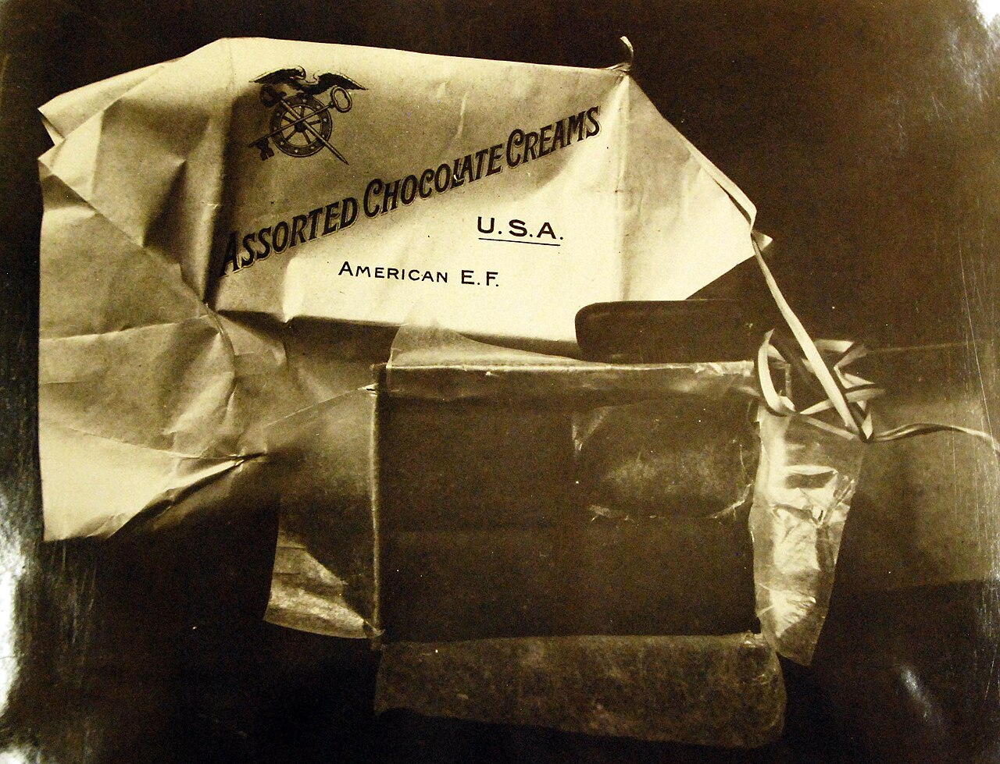

Illustrative reference images. These are not verified photographs of Nassau Candy facilities.

Freight Issues in Surface Transportation Reauthorization
Category: transportation
Creator: Ben Goldman
License: Public domain
View original source
![The patented Hand Truck Sentry System is an electrical mechanical retaining apparatus; engineered to safely transport hand trucks aboard the exterior of commercial delivery vehicles. The HTS Ultra-Rack uses a cab interior dash switch with LED indicator light and alarm to unlock and release the hand truck by remote. The HTS warns the route delivery driver if the hand truck is not safely locked or properly onboard before departure. Preventing the driver from leaving their hand truck behind at the previous delivery stop eliminates hand truck retrieval time! This design application eliminates lost, stolen, damaged and forgotten hand trucks forever! The HTS saves route time, labor costs, fuel costs and reduces worker injuries, freight damage, highway accidents and corporate risk.](../images/transportation/delivery_truck_2.JPG)
The patented Hand Truck Sentry System is an electrical mechanical retaining apparatus; engineered to safely transport hand trucks aboard the exterior of commercial delivery vehicles. The HTS Ultra-Rack uses a cab interior dash switch with LED indicator light and alarm to unlock and release the hand truck by remote. The HTS warns the route delivery driver if the hand truck is not safely locked or properly onboard before departure. Preventing the driver from leaving their hand truck behind at the previous delivery stop eliminates hand truck retrieval time! This design application eliminates lost, stolen, damaged and forgotten hand trucks forever! The HTS saves route time, labor costs, fuel costs and reduces worker injuries, freight damage, highway accidents and corporate risk.
Category: transportation
Creator: MobiusDaXter
License: CC BY-SA 3.0
View original source

Грузовое такси для доставки мебели населению. Фото В. Петровича. Ноябрь 1970 года. Главархив Москвы
Category: transportation
Creator: Главархив Москвы
License: CC BY 4.0
View original source
CT Logistics West Building
Category: supply_chain
Creator: Carl Tyson
License: CC BY-SA 4.0
View original source

Lot-8318-7: Chocolate Creams for the American Expeditionary Forces. The American Soldier has great fondness and real need for sweets which the Quartermaster Corps meets by manufacturing and selling candy at cost. A soldier who gets plenty of candy seldom craves liquor. Paris, December 26, 1918. U.S. Army Signal Corps Photograph. Courtesy of the Library of Congress. (2016/07/22).
Category: product_assortment
Creator: National Museum of the U.S. Navy
License: Public domain
View original source
Old-fashioned sweet jars in Oom Samie se Winkel, Stellenbosch
Category: product_assortment
Creator: HelenOnline
License: CC BY-SA 3.0
View original source
Pastel Peppermint Button Candies
Category: product_assortment
Creator: Sweetisfaction
License: CC BY-SA 3.0
View original source
![The overabundance of data created by modern information systems (IS) has led to a breakdown in cognitive decision-making. Without authoritative source data, commanders’ decision-making processes are hindered as they attempt to paint an accurate shared operational picture (SOP). Further impeding the decision-making process is the lack of proper interface interaction to provide a visualization that aids in the extraction of the most relevant and accurate data. Utilizing the DSS to present visualizations based on OLAP cube integrated data allow decision-makers to rapidly glean information and build their situation awareness (SA). This yields a competitive advantage to the organization while in garrison or in combat. Additionally, OLAP cube data integration enables analysis to be performed on an organization’s data-flows. This analysis is used to identify the critical path of data throughout the organization. Linking a decision-maker to the authoritative data along this critical path eliminates the many decision layers in a hierarchal command structure that can introduce latency or error into the decision-making process. Furthermore, the organization has an integrated SOP from which to rapidly build SA, and make effective and efficient decisions.
Subjects: Knowledge visualizations; critical information requirements; decision support system; merging workflows; data provenance](../images/dashboard_illustrations/logistics_analytics_1.jpg)
The overabundance of data created by modern information systems (IS) has led to a breakdown in cognitive decision-making. Without authoritative source data, commanders’ decision-making processes are hindered as they attempt to paint an accurate shared operational picture (SOP). Further impeding the decision-making process is the lack of proper interface interaction to provide a visualization that aids in the extraction of the most relevant and accurate data. Utilizing the DSS to present visualizations based on OLAP cube integrated data allow decision-makers to rapidly glean information and build their situation awareness (SA). This yields a competitive advantage to the organization while in garrison or in combat. Additionally, OLAP cube data integration enables analysis to be performed on an organization’s data-flows. This analysis is used to identify the critical path of data throughout the organization. Linking a decision-maker to the authoritative data along this critical path eliminates the many decision layers in a hierarchal command structure that can introduce latency or error into the decision-making process. Furthermore, the organization has an integrated SOP from which to rapidly build SA, and make effective and efficient decisions.
Subjects: Knowledge visualizations; critical information requirements; decision support system; merging workflows; data provenance
Category: dashboard_illustrations
Creator:
Hudson, Paul C.
Rzasa, Jeffrey A.
License: Public domain
View original source
![Cover title
"1 September 1982" -- page i
Includes bibliograhies and index
Pt. 1. Introduction. The Army logistics system ; Organization for logistics ; Army logistics requirements and resource management -- Pt. 2. Joint strategic planning system. Planning, programming, and budgeting ; Planning logistics support for military contingency operations -- Pt. 3. Acquisition function. Materiel acquisition ; Contracting ; Production -- Pt. 4. Supply. Inventory management ; Distribution management -- Pt. 5. Maintenance management. Maintenance management -- Pt. 6. Transporation. Management of transportation operations -- Pt. 7. Services. Services management -- Pt. 8. Facilities. Facilities management -- Pt. 9. Other logistics services. Security assistance ; Management of excess and surplus property ; Medical logistics ; Automated logistics mangement information systems
"This manual supersedes FM 38-1, 15 March 1973" -- page i
Subjects: United States. Army; United States. Army; Logistics](../images/dashboard_illustrations/logistics_analytics_2.jpg)
Cover title
"1 September 1982" -- page i
Includes bibliograhies and index
Pt. 1. Introduction. The Army logistics system ; Organization for logistics ; Army logistics requirements and resource management -- Pt. 2. Joint strategic planning system. Planning, programming, and budgeting ; Planning logistics support for military contingency operations -- Pt. 3. Acquisition function. Materiel acquisition ; Contracting ; Production -- Pt. 4. Supply. Inventory management ; Distribution management -- Pt. 5. Maintenance management. Maintenance management -- Pt. 6. Transporation. Management of transportation operations -- Pt. 7. Services. Services management -- Pt. 8. Facilities. Facilities management -- Pt. 9. Other logistics services. Security assistance ; Management of excess and surplus property ; Medical logistics ; Automated logistics mangement information systems
"This manual supersedes FM 38-1, 15 March 1973" -- page i
Subjects: United States. Army; United States. Army; Logistics
Category: dashboard_illustrations
Creator:
United States. Department of the Army
License: Public domain
View original source
![Todayαs planning and modeling systems use two-dimensional (2D) representations of the threedimensional (3D) battlespace. This presents a challenge for planners, commanders, and troops to understand the true nature of the battlespace. This thesis shows how 3D visualization can give both operation planners and executors a better understanding of the battlespace that can augment todayαs 2D systems. Automatic creation of a 3D model for an amphibious operation allows the planner to view an operation order as a whole, from different perspectives. Recommended changes can be made and their effects immediately known. Warfighters can use the same tools for mission preparation and review. The United States and NATO nations use the Land C2 Information Exchange Data Model (LC2IEDM), formally known as the Generic Hub, as a common method for exchanging data between independent systems. As part of the Scenario Authoring and Visualization for Advanced Graphical Environments (SAVAGE) project, this research presents an integrated Web access and 3D visualization strategy for Department of Defense (DOD) tactical messaging and operation orders using the Generic Hub data model and the Extensible Markup Language (XML). A number of alternative yet consistent ways to represent an amphibious operation scenario demonstrate the power, flexibility and scalability of the SAVAGE approach.
Subjects:](../images/dashboard_illustrations/logistics_analytics_3.jpg)
Todayαs planning and modeling systems use two-dimensional (2D) representations of the threedimensional (3D) battlespace. This presents a challenge for planners, commanders, and troops to understand the true nature of the battlespace. This thesis shows how 3D visualization can give both operation planners and executors a better understanding of the battlespace that can augment todayαs 2D systems. Automatic creation of a 3D model for an amphibious operation allows the planner to view an operation order as a whole, from different perspectives. Recommended changes can be made and their effects immediately known. Warfighters can use the same tools for mission preparation and review. The United States and NATO nations use the Land C2 Information Exchange Data Model (LC2IEDM), formally known as the Generic Hub, as a common method for exchanging data between independent systems. As part of the Scenario Authoring and Visualization for Advanced Graphical Environments (SAVAGE) project, this research presents an integrated Web access and 3D visualization strategy for Department of Defense (DOD) tactical messaging and operation orders using the Generic Hub data model and the Extensible Markup Language (XML). A number of alternative yet consistent ways to represent an amphibious operation scenario demonstrate the power, flexibility and scalability of the SAVAGE approach.
Subjects:
Category: dashboard_illustrations
Creator:
Nicklaus, Shane D.
License: Public domain
View original source